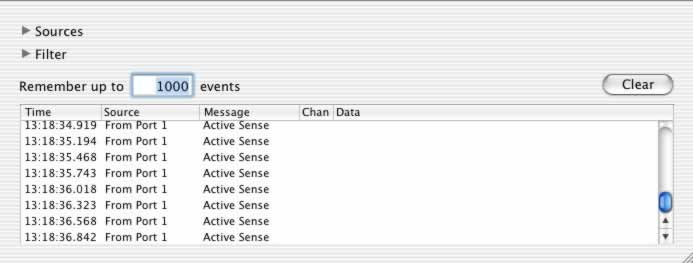
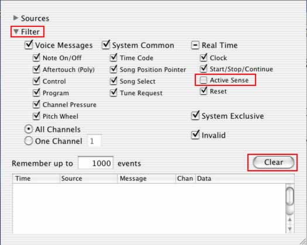
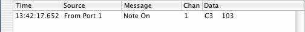
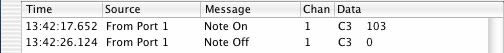
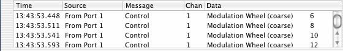
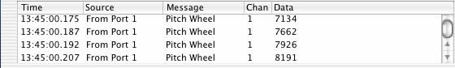
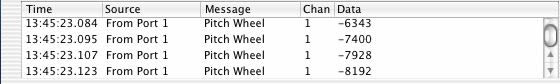
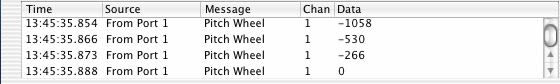

In this week's class, we learned about a number of different commands that can be sent by a MIDI controller. Let’s take a look at some of the actual values your Oxygen 8 keyboard transmits when you play. MIDI Monitor is a simple OS X application that displays all incoming MIDI data. We can use it to learn more about the commands that make up the MIDI spec. If you haven't done so already, download MIDI Monitor. (By the way, it's free.)
Make sure that your Oxygen 8 is connected to your laptop and set up properly using the Audio/MIDI setup application.
1. Open MIDI Monitor. You'll notice that your Oxygen 8 is sending a string of Active Sensing messages as shown below. This string of messages is designed to help troubleshoot MIDI connections. For our purposes, we won't need to see these, so let's filter them out.

Active Sensing messages.
2. Drop the "Filter" submenu, and de-select the "Active Sensing" option. Doing this will filter out these message types, and make it much easier to view the commands sent when we play the keyboard. Choose "Clear" to remove the messages that have already been displayed.

The MIDI Filter menu
3. Let's start with note messages. Play and hold a note on your Oxygen 8keyboard.
You'll see MIDI Monitor display the message type and channel of the command
it received. As you may recall, this is what's in the status byte of a MIDI
command. Note number and velocity, the data bytes in a note message, are displayed
directly after.

|
| Message Type: Note On |
4. Release the note and you'll notice that the same channel and note number are displayed followed by an indication that these were part of a note-off command. Many keyboards, such as the Oxygen 8, actually transmit a note-on message with a velocity of 0 when you release a key. If your keyboard transmits actual note-off messages, you'll usually see a release velocity displayed.

|
| Message Type: Note Off, velocity = 0 |
5. Play some more notes on your keyboard using different dynamic levels. Notice
how velocity corresponds with the dynamic level you're playing.
6. Let's try some of the other real-time controls on your keyboard. Move the Mod Wheel control. This will usually add vibrato to a synthesizer sound. You’ll notice that the channel remains the same. The number displayed will be the value for Mod Wheel, controller #1.
 |
| Controller 1: Mod Wheel |
7. Another common type of real-time control is pitch bend. Since the bend control on your keyboard allows you to bend both above and below the starting note, pitch bend is a type of bi-polar control, meaning that we can make changes in two directions from a starting point. This is different from the single direction, unipolar control we saw with mod wheel messages. In the following examples, we see pitch bend up, down and returned to its starting position. Try this on your keyboard.
 |
Pitch
Bend Up |
 |
Pitch
Bend Down |
 |
| Pitch Bend Center |
8. You'll notice that there are many more knobs on your Oxygen 8. Each of them transmits a different controller that can be used to adjust a parameter in Reason. These are set to some common defaults, but any MIDI controller can be assigned to any knob. The Oxygen-9 manual will describe how. Move the Data Entry slider that's to the left of the display and you'll see that it's set to send controller 7, volume messages.
| The Data Entry Slider |
See what MIDI messages are sent by the other knobs on your Oxygen 8.